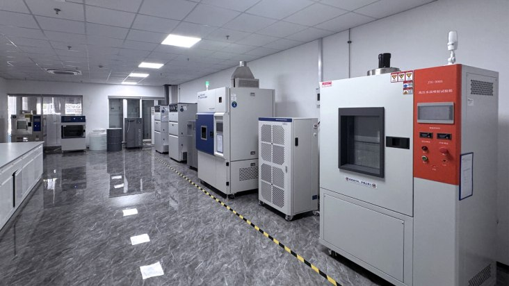
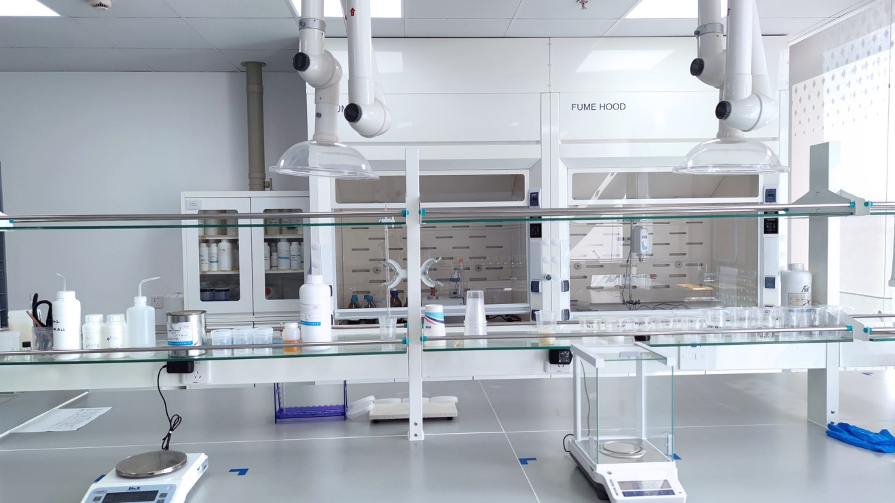

High-build application
Build the specified coating thickness with fewer application passes.

Engineering behind every coating.
High-solids formulations reduce the amount of solvent introduced during coating work. High-build application, ambient curing and conventional spray equipment support practical shipyard use.

Build the specified coating thickness with fewer application passes.
A formulation designed to cure in ambient conditions.
Supports contact between the coating and prepared substrate.
Supports corrosion protection, hardness and wear resistance.
Dedicated research laboratories, application testing and controlled production processes support product development and consistency.


Coating systems developed around substrate, exposure and application needs.
Raw material selection, process control and finished-product checks.
Laboratory evaluation supports technical assessment and product development.
Technical guidance connects coating specifications to conditions on site.
The marine coatings catalogue includes information on CCS, DNV and BV approvals. Applicability is product-specific; contact our team for the relevant current approval and scope.
View marine coatings catalogueTalk to our team about your vessel, operating conditions and next project.